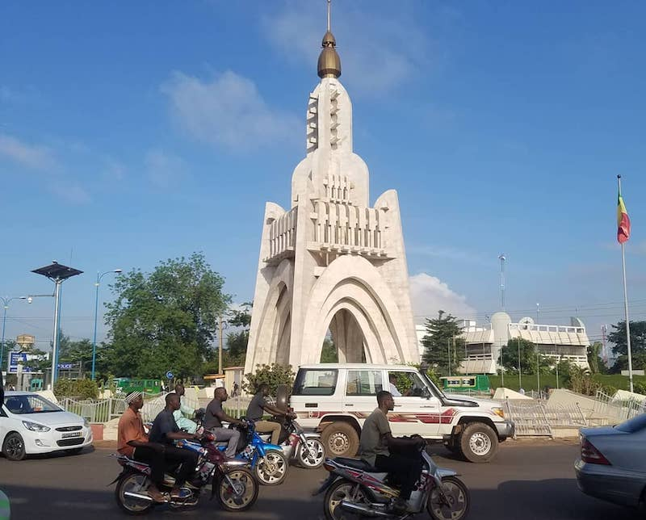

Mon voyage à Bamako
Nichée sur la rive nord du fleuve Niger, dans le sud-ouest du Mali, Bamako est la capitale d'un des pays les plus pauvres au monde. Mais c'est aussi une ville pleine de vie, parsemée des marchés et de mosquées, avec des airs de village. Bamako fut fondée au XVI siècle. En langue bambara, Bamako signifie « marigot du crocodile ». Bamako est une capitale africaine située le long du fleuve Niger. Ses diverses ethnies font de cette métropole, un lieu cosmopolite. En outre ses édifices (Sa grande mosquée, son institut national des arts, la mosquée de Hamdalaye) offrent un éventail impréssionnant de monuments. De quoi gâter touristes en quête de découverte. C'est également au coeur de la capitale Malienne que se trouve le siege de la BCEAO (la Banque Centrale des Etats d'Afrique de l'Ouest.) Ne résistez donc pas à la tentation de visiter l'une des plus belles capitales africaines. Mais avant de partir vous siroterez bien un verre de thé malien : symbole de l'hospitalité des Bamakois.